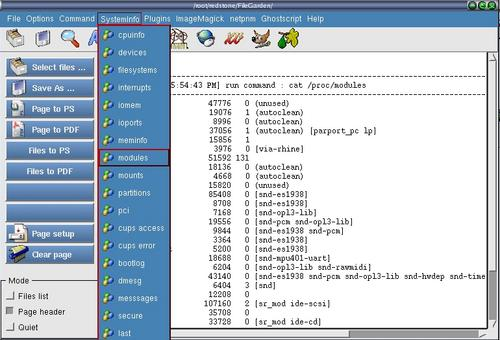

"Command" menuitem
"SystemInfo" menuitem

Step 1 : Click "Command" or "SystemInfo" menuitem and choose a command
to display it output on the editor.
note : The current directory of the xfgcommander is the current
directory of the saving location for all files saved.They will be highlighted
after you close a dialog or executed a menu command.
----------------------------------------------------------------------
To insert new "Command" command menuitem by manual editing
Step 1 : Shutdown FileGarden.
Step 2 : Edit the file " /opt/redstone/FileGarden/xfg.conf "
note : File path might not be the same as your installation.
There is no way to edit this file when FileGarden is running.
----------------------------------------------------------------------
example 1 : To add in " ls -a / " into the "Command" or the "SystemInfo"
menuitem
...
...
...
[Command]
list=ls -a /
netstat=netstat -anp
ps=ps -aux
free=free -m
-=
...
...
...
note : to insert a seperator use " - "
----------------------------------------------------------------------
example 2 : To add in image icon for the menuitem
...
...
...
[CommandImage]
list=/opt/redstone/FileGarden/image/system.png
netstat=/opt/redstone/FileGarden/image/system.png
ps=/opt/redstone/FileGarden/image/system.png
free=/opt/redstone/FileGarden/image/system.png
...
...
...